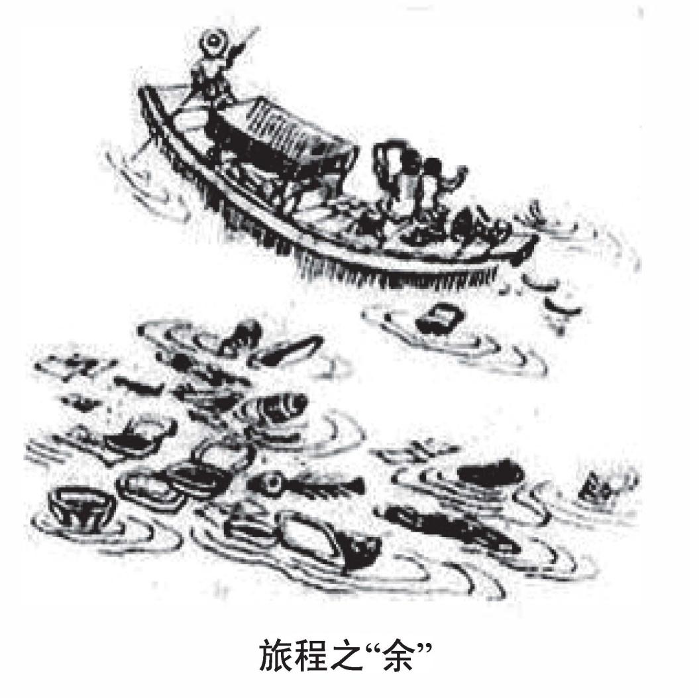
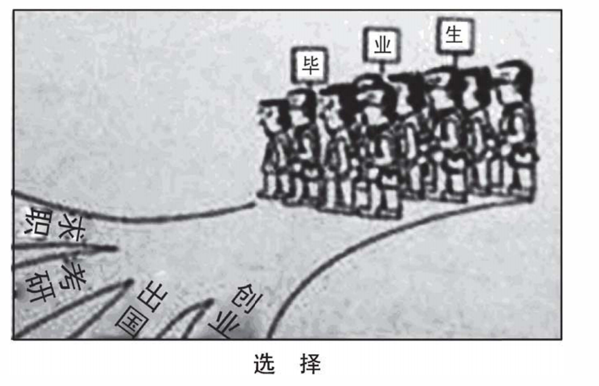
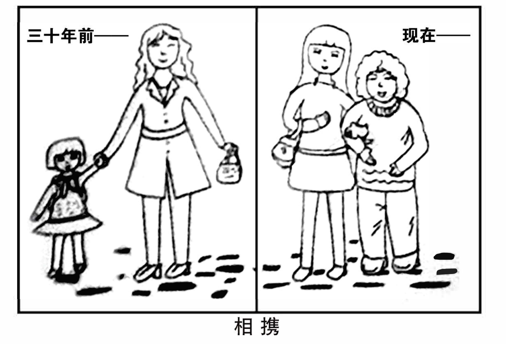
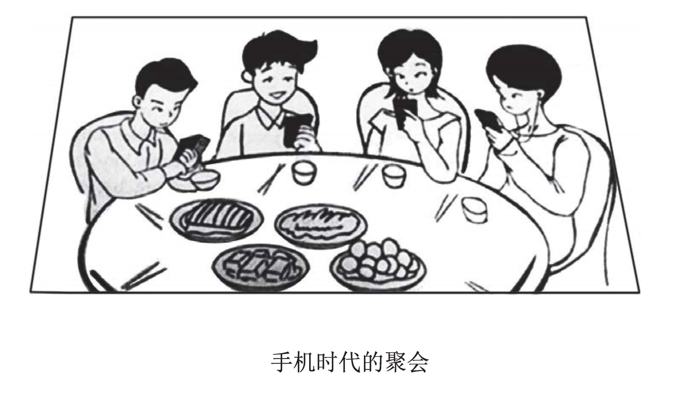
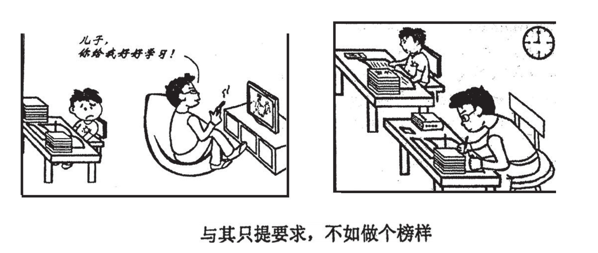
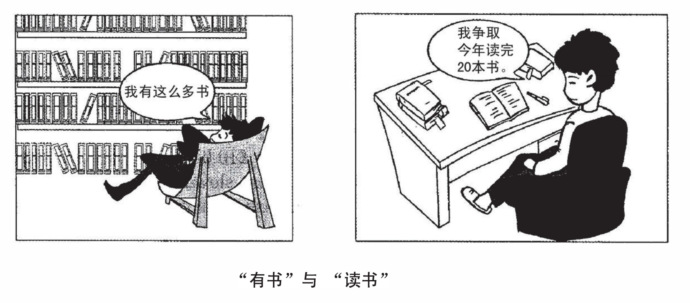
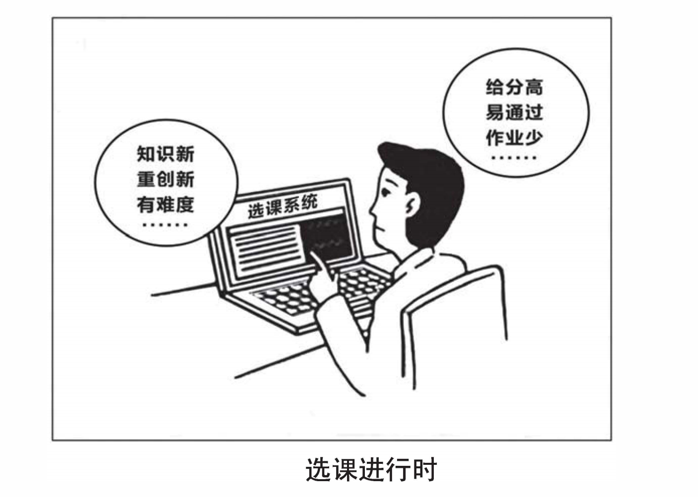
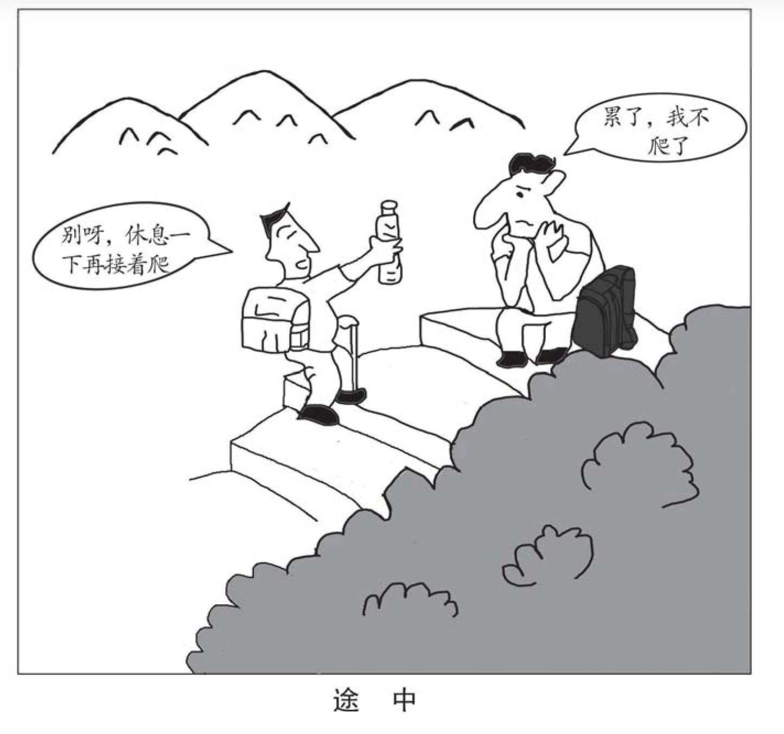
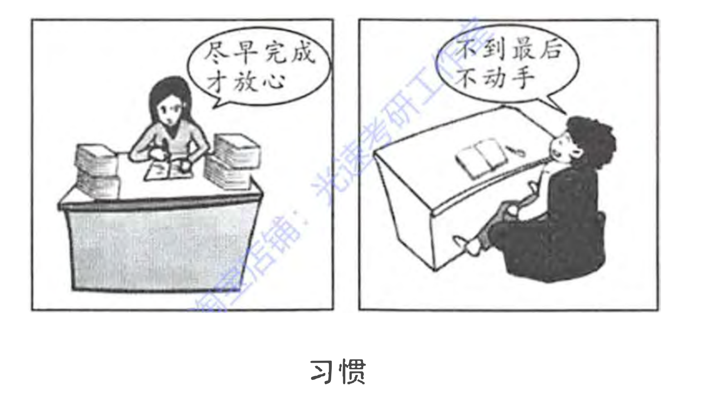
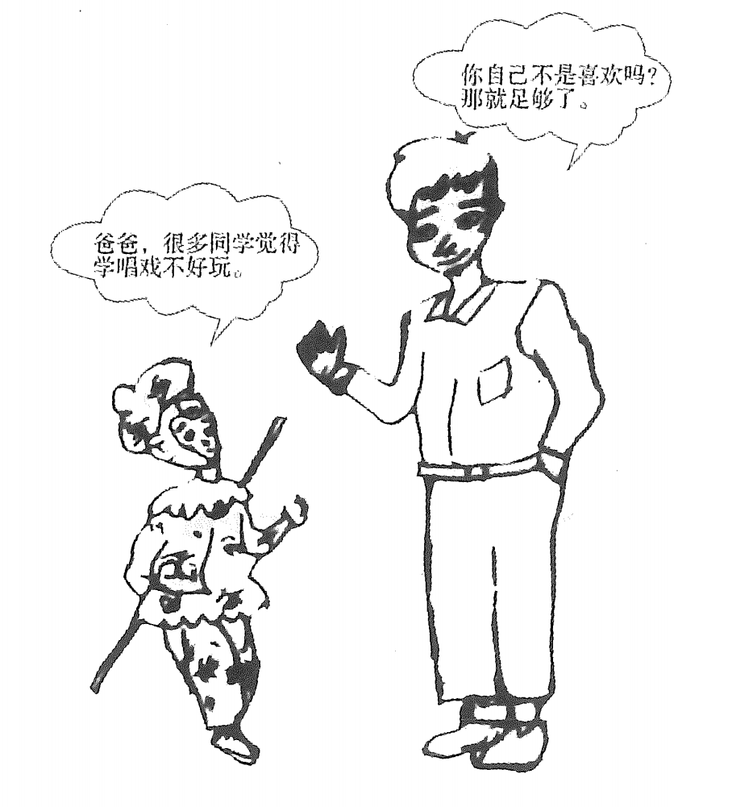

A Guide to My English reading and writing
基于2011-2021真题及新东方考研英语阅读
>
参考文献：
>
[1 历年考研英语(一)真题来源汇总(2022版)By 阿岳 ]
Part 1:题源型题目分析
现状(以完形填空错误>4题；阅读单篇>2题为收入分析界限)
| 年份 | 题型 | 原因备注 | 来源 | 内容主题关键词 | | —- | ——– | ———————— | ———————————– | ———————————– | | 2011 | 完形 | 逻辑关系、单词 | 科学美国人(200903) | 笑与健康 | | | text2 | 内容理解、单词 | 彭博商业周刊(20091105) | 金融，CEO | | | text3 | 内容推断、单词 | 福布斯(20100112) | earned media | | | text4 | 内容理解与推断、单词 | 新闻周刊(20100709) | 名人 怀孕 | | 2012 | 完形 | 逻辑关系、单词 | 纽约时报(20100701) | court justices | | | text2 | 内容推断、单词 | 波士顿环球报(20110424) | nuclear power plant | | | text4 | 内容理解、单词 | 经济学人(20110317) | trade union | | | 翻译 | 单词 | 自然(20110420) | universal principles | | 2013 | 完形 | 逻辑连词、单词 | 经济学人(20120616) | making decisions | | | text2 | 内容推断、单词 | 经济学人(20120609) | act of DNT | | | text4 | 内容理解、单词 | 华尔街日报(20120627) | Supreme court immigration laws | | | 翻译 | 单词 | 未找到来源 | gardens | | 2014 | 段落排序 | 内容理解、单词 | 《历史世界》网站 | archaeological sites | | 2015 | text2 | 作者态度，内容理解 | 华盛顿邮报(20140428) | supreme court digital data | | 2016 | text3 | 内容推断、单词 | 经济学人(20150625) | corporate social responsibility | | 2017 | text3 | 内容推断与理解 | 独立报(20160722) | GPD measure | | | text4 | 内容理解、单词 | 基督科学箴言报(20160627) | supreme court corruption conviction | | | 翻译 | 单词 | 书籍《English Next》 | english education | | 2018 | text4 | 仔细阅读、标题归纳 | 华盛顿邮报(20170213) | US post service | | | 段落排序 | 时间线索与耐心 | 美国白宫官网 | congress building | | | 翻译 | 单词 | 书籍《The Facts about Shakespeare》 | shakespeare | | 2019 | text2 | 内容推断、单词，写作手法 | 大西洋月刊(201806) | grade infation | | | text4 | 内容推断、单词 | 美联社(20180621) | supreme court sales taxs | | | 段落排序 | 内容理解、耐心 | 时代周刊(20180702) | tools to win argument | | 2021 | text1 | 内容理解、推断、单词 | 每日电讯报(20200102) | rail | | | text4 | 内容理解、推断、单词 | 洛杉矶时报(20191002) | court fcc |
其他反馈包括：1.完形填空的其他错误因素包括：词组固定搭配，介词，连接词的使用。2.阅读理解的其他常见错误在于错误理解题意。
总的来说，内容主题集中在金融类及司法类中。来源最多的是经济学人，其他均分散于其他来源。文章字数平均4-8段，以300-500字为主。题型主要为：文义推断、作者态度、单词理解、标题归纳、写作手法。
讨论
- 增强阅读 ：卫报、经济学人、大西洋月刊
- 精读主题：金融类、司法类
- 单词排查与拼写：欧陆词典经济学人5000高频解决拼写；考研高频5000解决阅读
- 读题能力：进一步归纳总结
写作
Part 1 作文一
2011
Write a letter to a friend of yours to
1) recommend one of your favorite movies and
2) give reasons for your recommendation.
2012
Some international students are coming to your university. Write them an email in
the name of the Students' Union to
1) extend your welcome and
2) provide some suggestions for their campus life here.
2013
Write an e-mail of about 100 words to a foreign teacher in your college, inviting him/her to be a judge for the upcoming English speech contest. You should include the details you think necessary.
2014
Write a letter of about 100 words to the president of your university, suggesting how to improve students' physical condition.
2015
You are going to host a club reading session. Write an email of about 100 words recommending a book to the club members. You should state reasons for your recommendation.
2016
Suppose you are a librarian in your university. Write a notice of about 100
words, providing the newly-enrolled international students with relevant
information about the library.
2017
You are to write an email to James Cook, a newly-arrived Australian
professor, recommending some tourist attractions in your city. Please give reasons
for your recommendation.
2018
Write an email to all international experts on campus inviting them to attend the
graduation ceremony. In your email you should include time, place and other relevant information about the ceremony.
2019
Suppose you are working for the "Aiding Rural Primary School" project of your
university. Write an email to answer the inquiry from an international student
volunteer, specifying the details of the project.
2020
The Student Union of your university has assigned you to inform the international
students about an upcoming singing contest. Write a notice in about 100 words.
2021
A foreign friend of yours has recently graduated from college and intends to find a job in China. Write him/her an email to make some suggestions. Form：email、notices
To who：foreign friend 、international students、international experts、a newly-arrived Australian professor、club members、the president of your university，
Part 2 作文二:看图作文
describe the drawing briefly,explain its intended meaning, and give your comments
2011:旅途之余

2012:我全完了，我还剩点
2013:选择

2014:相携

2015:手机时代的聚会

2016:与其提要求，不如做榜样

2017:有书与读书

2018:选课进行时

2019:途中

2020:习惯

2021:兴趣
